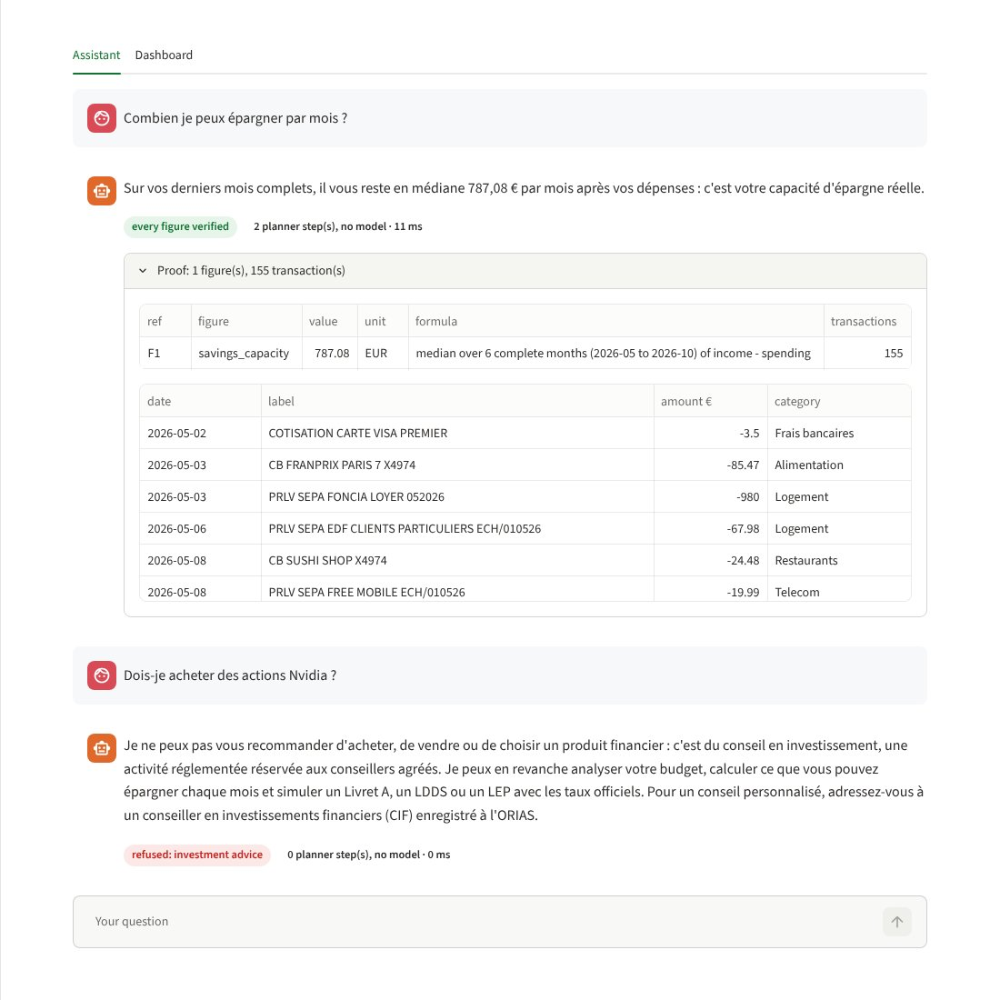

Nestegg ↗
The savings assistant a bank could put in its app: every figure is proven, personal data is protected.
A customer wants to know where their money goes and how much they can save. A general chatbot can answer, but a bank cannot use it : data must stay in-house, every figure shown must be exact and auditable, and investment advice is regulated.
Nestegg is built around these three constraints. The model picks the tools and writes; it never computes a figure.
Real run on Databricks Free Edition (serverless), fictional data. Unreadable lines are never lost: they are quarantined with their reason.

An answer with its proof (the formula and the 155 transactions behind the figure), then a request for investment advice refused before any model call. Fictional data. Click to enlarge.